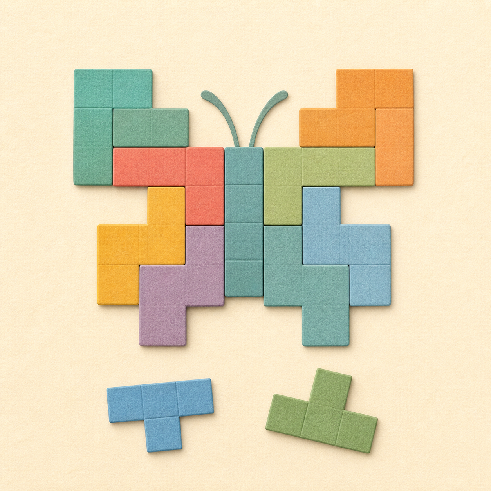

EERSTE LEERJAAR · GROEP 3
Spelen met Bibi
Kies een spel en oefen mee!

Wat wil je spelen?
Tik op Start of luister eerst naar de uitleg.


EERSTE LEERJAAR · GROEP 3
Kies een spel en oefen mee!
Tik op Start of luister eerst naar de uitleg.
